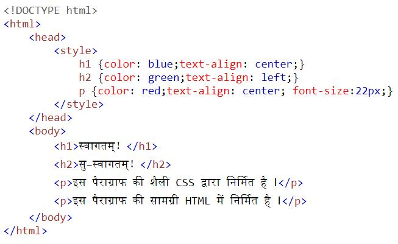

|
Table of Contents
|
वेब स्क्रेपिंग के लाभ
वेबसाइटों से प्रोग्रामिंग द्वारा स्वचालित तरीके से मनचाहे डाटा उतारना “वेब स्क्रेपिंग” है । इसके तीन लाभ हैं —
जिस वेबसाइट से डाटा डाउनलोड करने का विकल्प नहीं है उससे भी डाटा लिया जा सकता है，]
स्वचालित और द्रुत गति से डाटा मिलेगा जिससे समय और श्रम की बचत होगी，और
अनचाहे डाटा को छाँटकर मनचाहे फॉर्मेट में मनचाहा डाटा लिया जा सकता है ।
कृत्रिम बुद्धि，विशेषतया मशीन लर्निंग के प्रोग्रामों के लिये，बड़े पैमाने पर और प्रोग्राम के लिये अनुकूल सही फॉर्मेट में डाटा की आवश्यकता पड़ती है जिसके लिये वेब स्क्रेपिंग आवश्यक हो जाता है ।
~~~~~~~~~~~~~~~~~~~~~~~~~~~~~~~~~~~~~~~~~~~~~~~~~~~~~~~~~~~~~~~~~
अनाकोण्डा में “रिक्वेस्ट” इन्सटॉल
वेबसाइट खोलकर डाटा की कॉपी−पेस्ट करना समय की बर्बादी है । जावा−स्क्रिप्ट या कर्ल या पायथन आदि द्वारा यह कार्य आसानी से सम्पन्न हो सकता है ।
अपना पायथन API बनाकर वेबसाइटों से डाटा उतारें । इसे वेब−स्क्रेपिंग कहा जाता है ।
अनाकोण्डा कमाण्ड−प्रॉम्प्ट में एक नयी लाइब्रेरी इन्सटॉल करें —
——————————————
conda install requests
——————————————
अब वेब−स्क्रेपिंग कर सकते हैं । उदाहरण प्रस्तुत है —
अनाकोण्डा−प्रॉम्प्ट पर python लिखकर एण्टर−बटन दबाकर पहले पायथन में प्रवेश करें । अब प्रोग्राम ऐसे लिखें (इसमें वेबसाइट मेरा फेसबुक−एड्रेस है) —
——————————————
import requests
response = requests.get("https://www.facebook.com/vinay.jha.906")
print(response.status_code)
——————————————
हर पङ्क्ति के बाद भी एण्टर बटन दबा सकते हैं，अथवा उपरोक्त तीन पङ्क्तियाँ यहाँ से कॉपी करके पायथन इण्टरफेस में पेस्ट कर सकते हैं，तब केवल पेस्ट करने के बाद एक बार एण्टर दबाना पड़ेगा ।
यदि उत्तर “२००” है तो इसका अर्थ है कि उपरोक्त वेबसाइट आपको डाटा दे रहा है；
यदि रिस्पॉन्स−कोड ३०० है तो वेबसाइट आपको किसी दूसरे पते पर रि−डायरेक्ट कर रहा है；
४०० का अर्थ है आपका रिक्वेस्ट गलत है — उसे ठीक से लिखें；
४०१ का अर्थ है कि आपसे पासवर्ड आदि द्वारा लॉग−इन की अपेक्षा थी जिसके बिना डाटा नहीं मिलेगा；
४०३ का अर्थ है कि उस साइट से कोई भी डाटा प्रोग्राम द्वारा लेने पर पूर्ण प्रतिबन्ध है — जैसे कि गोल्डप्राइस⋅ऑर्ग；
४०४ का अर्थ है कि उस सर्वर पर वह संसाधन था ही नहीं जो आप चाहते हैं；
५०३ का अर्थ है कि सर्वर अभी आपकी बात सुनने के लिये तैयार नहीं है — व्यस्त या डाउन होगा ।
रिस्पॉन्स−कोडों की पूरी जानकारी यहाँ मिलेगी — https://developer.mozilla.org/en-US/docs/Web/HTTP/Status
~~~~~~~~~~~~~~~~~~~~~~~~~~~~~~~~~~~~~~~~~~~~~~~~~~~~~~~~~~~~~~~~~
वेबसाइट से सूचना कैसे निकालें
उदाहरण : api.open-notify
किसी वेबसाइट से जो सूचना आपने “रिक्वेस्ट” नामके API से उपरोक्त विधि द्वारा निकाली उसे यदि response नाम के स्ट्रिंग में सुरक्षित किया तो उस response को देखने के लिये आपको प्रोग्रामिंग स्क्रिप्ट का प्रयोग करना पड़ेगा । अन्तर्राष्ट्रीय अन्तरिक्ष स्टेशन ISS (International Space Station) के लिये ऐसा ही एक जावा स्क्रिप्ट है api.open-notify जिसमें astros.json，iss-now.json आदि नाम के अनेक जावा स्क्रिप्ट हैं । जावा स्क्रिप्ट के लिये आपके कम्प्यूटर में जावा रनटाइम लाइब्रेरी इन्सटॉल करना पड़ेगा जो मुफ्त है ।
import request के बाद पायथन प्रॉम्प्ट में लिखें —
response = requests.get("http://api.open-notify.org/astros.json")
print(response.status_code)
उत्तर २०० मिले तो आगे बढ़ सकते हैं । तब लिखें —
print(response.json())
अभी मेरे पायथन प्रॉम्प्ट पर इसका उत्तर आया —
{'people': [{'name': 'Christina Koch', 'craft': 'ISS'}, {'name': 'Alexander Skvortsov', 'craft': 'ISS'}, {'name': 'Luca Parmitano', 'craft': 'ISS'}, {'name': 'Andrew Morgan', 'craft': 'ISS'}, {'name': 'Oleg Skripochka', 'craft': 'ISS'}, {'name': 'Jessica Meir', 'craft': 'ISS'}], 'number': 6, 'message': 'success'}
अर्थात् अन्तरिक्ष में स्थापित “अन्तर्राष्ट्रीय अन्तरिक्ष स्टेशन” ISS (International Space Station) में इस समय ६ अन्तरिक्ष यात्री रह रहे हैं जिनके नाम भी उपरोक्त उत्तर में हैं और वे जिस 'craft' में हैं उसका नाम है 'ISS' ।
▃▃▃▃▃▃▃▃▃▃▃▃▃▃▃▃▃▃▃▃▃▃▃▃▃▃▃▃▃
अब astros.json के स्थान पर दूसरे api का प्रयोग उसी वेबसाइट open-notify.org पर करें जिसका नाम है iss-now.json —
response = requests.get("http://api.open-notify.org/iss-now.json")
print(response.json())
मुझे उत्तर मिला —
{'iss_position': {'longitude': '-104.6406', 'latitude': '49.8912'}, 'timestamp': 1571163393, 'message': 'success'}
ISS का पृथ्वी के ऊपर अक्षांश और रेखांश में position बता रहा है और कूटभाषा में timestamp बता रहा है，जिसका अर्थ जानना हो तो https://www.epochconverter.com/ पर जाकर उक्त timestamp “1571163393” को पेस्ट करें，अर्थ बतायेगा —
Tuesday, October 15, 2019 11:46:33 PM GMT+05:30
▃▃▃▃▃▃▃▃▃▃▃▃▃▃▃▃▃▃▃▃▃▃▃▃▃▃▃▃▃
Nathan Bergey नाम के वैज्ञानिक ने ISS के लिये Open-Notify-API बनाया ।
उक्त अन्तरिक्ष स्टेशन ISS के बारे में विस्तृत जानकारी नासा के अपने वेबसाइट पर मिलेगी —
https://spaceflight.nasa.gov/…/JavaSS…/orbit/ISS/SVPOST.html
अब आप पूछेंगे कि जब नासा अपने वेबसाइट पर सूचना दे ही रही है तो API बनाकर सूचना क्यों निकालें？
API का लाभ यही है कि अपने प्रोग्राम में मनचाहे API द्वारा आप वेबसाइटों से स्वचालित तरीके से डाटा निकालकर विशाल continuous time series database बना सकते हैं जिसके बहुत से उपयोग आप कर सकते हैं ।
जैसे कि किसी कम्पनी के दैनिक शेयर मूल्यों का विशाल डैटाबेस बनाकर उसपर ट्रेडिंग हेतु शेयर मूल्यों की भविष्यवाणी का मशीन लर्निंग प्रोग्राम बना सकते हैं जो शेयर बाजार के व्यवसाय में काम देगा ।
रिक्वेस्ट से फालतू चीजों की छँटनी
ऊपर आपने देखा कि २८००० किलोमीटर प्रतिघण्टे की गति से पृथ्वी के चतुर्दिक घूमने वाले अन्तरिक्ष स्टेशन की स्थिति और उसमें बैठे लोगों के नाम आदि की सूचना कैसे प्राप्त की जाय । ऐसी सूचनाओं का विशाल डैटाबेस प्रोग्राम द्वारा बनाकर और तब मशीन लर्निंग द्वारा उसकी भावी स्थिति का पता पहले से लगाकर वहाँ मिसाइल दागकर शत्रुदेश के सैन्य वा जासूसी उपग्रह को गिराया जा सकता है । पर वह आपके काम की चीज नहीं है । आपके काम की चीज निम्न है — जैसे कि ऑनलाइन अंग्रेजी शब्दकोष से किसी शब्द का अर्थ कैसे ज्ञात किया जाय ।
उपरोक्त response (जिसे नीचे resp लिखा गया है) को पढ़कर इसमें से अनचाही बातें छाँटकर काम की बातें निकालनी पड़ेगी । response में अधिकांश फालतू बातें HTML के टैग आदि होते हैं जिन्हें हटाने के तीन उदाहरण प्रस्तुत है ।
पहले अनाकोण्डा में conda install lxml इन्सटॉल करें । फिर पायथन में जाकर निम्न कोड कॉपी करके पेस्ट कर दें और अन्त में दो बार एण्टर दबा दें —
▃▃▃▃▃▃▃▃▃▃▃▃▃▃▃▃▃▃▃▃▃▃▃▃▃▃▃▃▃
import requests as req
from lxml import html
import textwrap
term = "mango"
resp = req.get("http://www.dictionary.com/browse/" + term)
root = html.fromstring(resp.content)
for sel in root.xpath("//span[contains(@class, 'one-click-content')]"):
if sel.text:
s = sel.text.strip()
if (len(s) > 3):
print(textwrap.fill(s, width=100))
“आम” के अनेक निम्न अर्थ बतलायगा —
the oblong, sweet fruit of a tropical tree,
the tree itself.
a sweet pepper.
any of several large hummingbirds of the genus
a tropical Asian anacardiaceous evergreen tree,
the ovoid edible fruit of this tree, having a smooth rind and sweet juicy orange-yellow flesh
width=100 को घटा−बढ़ा कर लाइन की लम्बाई परिवर्तित कर सकते हैं ।
▃▃▃▃▃▃▃▃▃▃▃▃▃▃▃▃▃▃▃▃▃▃▃▃▃▃▃▃▃
अब गूगल ट्रान्सलेट की खबर लें । अनाकोण्डा में इसकी लाइब्रेरी इन्सटॉल करें —
pip install googletrans
अब निम्न कोरियन शब्द का अंग्रेजी में अनुवाद करना हो तो इस पायथन कोड को पायथन प्रॉम्प्ट में पेस्ट करके एण्टर दबा दें —
from googletrans import Translator
translator = Translator()
translator.translate('안녕하세요.')
अनुवाद तो कर देगा किन्तु बिना पैसे के दिखायेगा नहीं，क्योंकि कमर्शियल सर्विस है，इसके द्वारा आप मोटी पुस्तकों का अनुवाद स्वचालित तरीके से कर सकते हैं，पैसा नहीं देंगे तो ऐसा अनुवाद करेगा —
<googletrans.models.Translated object at 0x00000183C41810B8>
अर्थात् Translated तो है किन्तु 0x00000183C41810B8 पते पर लॉकर में बन्द है！
▃▃▃▃▃▃▃▃▃▃▃▃▃▃▃▃▃▃▃▃▃▃▃▃▃▃▃▃▃
मेरे फेसबुक अकाउण्ट से मेरे बारे में विस्तृत सूचना चाहिये तो इस कोड को पायथन प्रॉम्प्ट में रन करें —
import requests as req
import re
resp = req.get("https://www.facebook.com/vinay.jha.906")
content = resp.text
stripped = re.sub('<[^<]+?>', '', content)
print(stripped)
कूड़ा stripped करने के बाद भी ढेर सारी बकवास दिखेगी । किन्तु परिश्रम करके उसमें से "name": ， "address": ， "Organization" ，आदि शब्दों को छाँटकर उनके अनुसार अलग प्रोग्राम (पायथन स्क्रिप्ट) बनाकर अपने सभी परिचितों और दूसरों के बारे में फेसबुक से सूचनायें एकत्र कर सकते हैं । फेसबुक ऐसी सूचनायें गुप्त रूप से बेचकर पैसा कमाती है ।
~~~~~~~~~~~~~~~~~~~~~~~~~~~~~~~~~~~~~~~~~~~~~~~~~~~~~~~~~~~~~~~~~
स्टॉक बाजार डैटारीडर
याहू−फायनैन्स का API
शेयर बाजारों में पञ्जीकृत कम्पनियों के सूचकांक देखने के लिये संसार का सर्वोत्तम वेबसाइट है याहू−फायनैन्स जिसने yahoo-fin नाम का अपना API सार्वजनिक कर रखा है，अनाकोण्डा के वर्चुअल एनवॉयरनमेण्ट में इसे इन्सटॉल करें —
pip install yahoo-fin
अब किसी कम्पनी का वर्तमान स्टॉक मूल्य जानने का तरीका निम्न है，पायथन प्रॉम्प्ट पर संसार की सबसे बड़ी कम्पनी “अमेजन” का उदाहरण प्रस्तुत है —
from yahoo_fin import stock_info as si
si.get_live_price("amzn")
उत्तर में वर्तमान मूल्य बता देगा । यदि आप ऐसा प्रोग्राम बना लें जो हर एक मिनट पर उपरोक्त दो पङ्क्तियों को बारम्बार दुहराता रहेगा तो आप हर एक मिनट का विशाल continuous time series database बना सकते हैं जो इण्टरनेट पर आपको कहीं नहीं मिलेगा । इण्टरनेट पर आपको एक दिन के अन्तराल वाले आँकड़े मिलेंगे जिनके आधार पर आप डे−ट्रेडिंग का मशीन लर्निंग प्रोग्राम नहीं बना सकते，ऐसे कृत्रिम बुद्धि वाले स्वचालित प्रोग्राम के लिये आपको छोटे अन्तराल वाला विशाल continuous time series database चाहिये जो आप उपरोक्त विधि द्वारा बना सकते हैं । एक दिन में स्टॉक बाजार १४ घण्टे से भी कम काल हेतु खुले रहते हैं और सप्ताह में दो दिन बन्द रहते हैं，अन्य कई छुट्टियाँ भी होती हैं，जिन कारणों से दीर्घकालीन औसत है लगभग पौने छ सौ मिनट प्रतिदिन । जीपीयू मोड की मशीन लर्निंग प्रोग्राम में आपने देखा कि NVIDEA के सबसे सस्ते GPU द्वारा भी ७० हजार सैम्पल वाले डैटाबेस की मशीन लर्निंग ट्रेनिंग यदि २० आवृत्तियों (epoch) में की जाय तो केवल ४० सेकण्ड लगते हैं । अतः हर एक मिनट का डाटा लिया जाय तो औसतन चार मास के डैटाबेस में ७० हजार सैम्पल रहेंगे । अतः एक वर्ष का ऐसा डैटाबेस बनायें तो केवल दो मिनट में भविष्यवाणी करने में सक्षम उसका ट्रेण्डडैटा फाइल बन जायगा । ऐसा प्रोग्राम कितना सफल होगा उसका उदाहरण आजतक मैंने इण्टरनेट पर कहीं नहीं देखा，इण्टरनेट के सारे उस्ताद प्रत्येक एक दिन के अन्तराल वाले डैटाबेस रेडीमेड डाउनलोड करते हैं और उसपर मशीन लर्निंग प्रोग्राम बनाते हैं जो दीर्घकालीन ग्राफ की लगभग नकल तो करते हैं किन्तु डे−ट्रेडिंग में बिल्कुल सहायता नहीं करते，क्योंकि डे−ट्रेडिंग हेतु मशीन लर्निंग प्रोग्राम तभी बनेगा जब आप क्षण−प्रतिक्षण के आँकड़े इकट्ठा करके उसपर मशीन लर्निंग प्रोग्राम बनायें，जिसका तरीका मैंने यहाँ बताया है ।
याहू−फायनैन्स से अन्य सूचनायें प्राप्त करने के लिये उपपरोक्त दो पङ्क्तियों के कोड में से दूसरी पङ्क्ति को बदलकर निम्न में से कोई एक पङ्क्ति एक बार में रख कर प्रोग्राम रन करें और क्या परिणाम मिलता है यह देखें —
si.get_quote_table("amzn", dict_result = False)
si.get_quote_table("amzn")
si.get_day_most_active()
si.get_day_gainers()
si.get_day_losers()
डैटारीडर
उपरोक्त तरीके से आप क्षण−प्रतिक्षण का मनचाहा डैटाबेस बना सकते हैं । उसमें परिश्रम तो है किन्तु वैसा डैटाबेस कहीं बना−बनाया नहीं मिलेगा ।
परन्तु यदि आप एक ही झटके में मनचाहे कालखण्ड के दीर्घकालीन दैनिक आँकड़ें चाहते हैं तो उसका तरीका निम्न उदाहरण द्वारा स्पष्ट किया गया है जिसे पायथन प्रॉम्प्ट पर चलाना चाहिये।
import datetime as dt
from datetime import datetime
import matplotlib.pyplot as plt
from matplotlib import style
import pandas as pd
import pandas_datareader.data as web
style.use('ggplot')
start = dt.datetime(2019,9,14)
end = dt.datetime(2019,10,15)
df = web.DataReader('RELIANCE.NS', 'yahoo', start, end)
print(df.head(3))
print(df.tail(4))
स्टॉक बाजारों में हरेक कम्पनी का अपना विशिष्ट कूटनाम कोड होता है जो गूगल सर्च द्वारा मिल जायगा । रिलायन्स इण्डस्ट्रीज लिमिटेड का कूटनाम है RELIANCE.NS जिसका उपरोक्त पायथन प्रोग्राम में प्रयोग किया गया है । start, end का अर्थ है आपका मनचाहा कालखण्ड । जिसमें केवल वर्ष，मास और दिन का ही उपरोक्त उदाहरण में प्रयोग किया गया है क्योंकि याहू−फायनेन्स का वेबसाइट आपको केवल एक दिन के अन्तराल वाले डैटा ही इस विधि द्वारा देगा । परन्तु datetime में दिन के बाद घण्टा，मिनट，सेकण्ड तथा माइक्रोसेकण्ड (एक सेकण्ड का दस लाखवाँ भाग) का भी प्रावधान रहता है जो दूसरे कार्यों में आपको काम दे सकते हैं，जैसे कि datetime.datetime(2019, 10, 17, 11, 7, 39, 926619) । यदि आपने जो कालखण्ड चुना है उसमें ३०० दिन हैं किन्तु आप केवल आरम्भिक (head) तीन और अन्त के चार दिनों के ही आँकड़े देखना चाहते हैं तो क्रमशः print(df.head(3)) और print(df.tail(4)) लिखने पर DataReader लाइब्रेरी द्वारा आप मनचाहे आँकड़े देख सकते हैं । इस विधि द्वारा आप संसार की सभी कम्पनियों के दीर्घकालिक दैनिक डैटाबेस बना सकते हैं ।
~~~~~~~~~~~~~~~~~~~~~~~~~~~~~~~~~~~~~~~~~~~~~~~~~~~~~~~~~~~~~~~~~
वेब स्क्रेपिंग : ब्यूटीफुल सूप
अनाकोण्डा एडमिन प्रॉम्प्ट में पहले conda install BeautifulSoup4 रन करके इसे इन्सटॉल करें । फिर पायथन प्रॉम्प्ट पर निम्न कोड चलायें —
▃▃▃▃▃▃▃▃▃▃▃▃▃▃▃▃▃▃▃▃▃▃▃▃▃▃▃▃▃
from bs4 import BeautifulSoup
import lxml
import requests as req
import re
resp = req.get("https://www.astro.com/astro-databank/Nehru,_Jawaharlal")
soup = BeautifulSoup(resp.content, 'html.parser')
print(soup.get_text())
अथवा अन्तिम पङ्क्ति के स्थान पर लिखें —
for link in soup.find_all('a'):
print(link.get('href'))
▃▃▃▃▃▃▃▃▃▃▃▃▃▃▃▃▃▃▃▃▃▃▃▃▃▃▃▃▃
उपरोक्त 'a' का अर्थ HTML में <a> tag है । BeautifulSoup द्वारा ढेर सारी सूचनायें वेबसाइटों से निकाल सकते हैं，जैसे कि
print(soup.prettify()) उस वेबपृष्ठ की HTML संरचना सुस्पष्ट तरीके से दिखा देगा，जिसके बाद आप तय कर सकते हैं कि उस HTML संरचना के किन−किन तत्वों का BeautifulSoup द्वारा कैसे प्रयोग किया जा सकता है । कुछ प्रमुख तत्व हैं —
soup.title
soup.title.name
soup.title.string
soup.title.parent.name
soup.p
soup.a
soup.find(id="link3")
print(soup.text.strip())
print(soup.prettify())
tbl = soup.find('table')
rows = tbl.findAll('tr')
for row in rows:
print(row.get_text())
soup.find_all('a') का प्रयोग उपरोक्त प्रोग्राम में दिखाया गया है ।
link3 का अर्थ है वाञ्छित वेबपृष्ठ पर तीसरा वेब−लिंक ।
ब्यूटीफुल−सूप का कैसे प्रयोग करें इसपर यह उदाहरण अच्छा है —
https://www.digitalocean.com/community/tutorials/how-to-scrape-web-pages-with-beautiful-soup-and-python-3
ब्यूटीफुल सूप : डाटा को फाइल में सुरक्षित करना
▃▃▃▃▃▃▃▃▃▃▃▃▃▃▃▃▃▃▃▃▃▃▃▃▃▃▃▃▃
from bs4 import BeautifulSoup
import lxml
import requests as req
import re
resp = req.get("https://www.astro.com/astro-databank/Nehru,_Jawaharlal")
soup = BeautifulSoup(resp.content, 'html.parser')
string = soup.text.strip()
start = string.find('Gender')
end = string.find('Retrieved from')
string2 = string[start:end]
start2 = string2.find('add ')
end2 = string2.find('Biography')
string3 = string2[start2:end2]
str = string2.replace(string3, '')
str = "".join([s for s in str.strip().splitlines(True) if s.strip("\r\n").strip()])
print(str)
text_file = open("Z:/Nehru_Jawaharlal.txt", "w")
text_file.write(str)
text_file.close()
▃▃▃▃▃▃▃▃▃▃▃▃▃▃▃▃▃▃▃▃▃▃▃▃▃▃▃▃▃
~~~~~~~~~~~~~~~~~~~~~~~~~~~~~~~~~~~~~~~~~~~~~~~~~~~~~~~~~~~~~~~~~
वेब स्क्रेपिंग का सर्वोत्तम साधन : SCRAPY
HTML तथा CSS
उपरोक्त ब्यूटीफुल−सोप या स्क्रेपी आदि का प्रयोग करने के लिये HTML तथा CSS का कामचलाऊ ज्ञान आवश्यक है । HTML द्वारा वेबसाइटों की सामग्री बनायी जाती है और CSS उनमें प्रयुक्त फॉण्ट，रङ्ग，आदि शैली को सुरक्षित रखता है । इसे देखने के लिये https://www.w3schools.com/css/tryit.asp?filename=trycss_syntax1 वेबपृष्ठ खोलें और उसमें बांयी ओर की समूची सामग्री को हटाकर निम्न सामग्री पेस्ट कर दें और ऊपर RUN» दबा दें (और इसमें विभिन्न प्रयोग करें) —▃▃▃▃▃▃▃▃▃▃▃▃▃▃▃▃▃▃▃▃▃▃▃▃▃▃▃▃▃
<!DOCTYPE html>
<html>
<head>
<style>
h1 {color: blue;text-align: center;}
h2 {color: green;text-align: left;}
p {color: red;text-align: center; font-size:22px;}
</style>
</head>
<body>
<h1>स्वागतम्！</h1>
<h2>सु−स्वागतम्！</h2>
<p>इस पैराग्राफ की शैली CSS द्वारा निर्मित है ।</p>
<p>इस पैराग्राफ की सामग्री HTML में निर्मित है ।</p>
</body>
</html>
▃▃▃▃▃▃▃▃▃▃▃▃▃▃▃▃▃▃▃▃▃▃▃▃▃▃▃▃▃
निम्न फोटो इस कोड को बेहतर तरीके से दिखाता है —

दाहिनी ओर परिणाम दिखेगा । इस तरह आप वेबसाइट बना सकते हैं । RUN» से बायीं ओर के बटनों को दबाकर पन्ने का ओरिएण्टेशन और रङ्ग बदल सकते हैं，दोनों भागों के बीच की विभाजक रेखा को खिसका भी सकते हैं ।
वेबसाइट बनाने का यह तरीका सीख लेंगे तो किसी भी वेबसाइट से सूचना निकालने में ब्यूटीफुल−सोप या स्क्रेपी आदि का प्रयोग कर सकते हैं ।